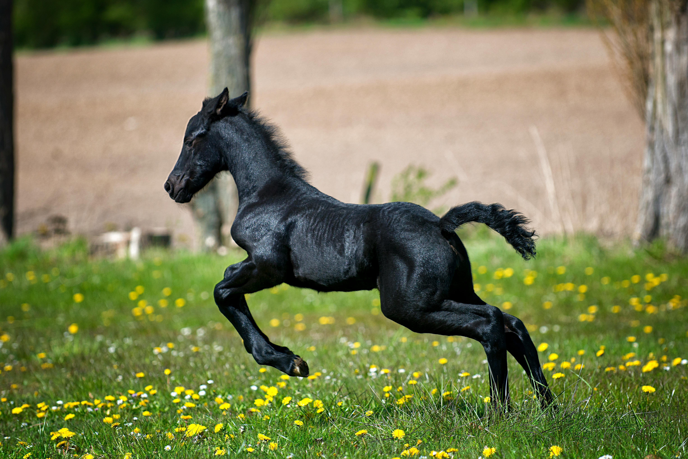

Caring for horses can be costly as you need to have food, shelter ,and veternarian checkups. The average horse eats around 20 lbs. of food a day. Horses need shelter to retreat to like heavy storms and possibly cold or hot weather. Horses also need lots of pasture room. Don't forget regular veternarian check-ups to insure your horse is healthy.

Riding horses can be exremely fun as long as you know the basics of riding and precautions. Some of the precautions include a riding helmet and comforable clothes to move freely in. It is also important to wear boots to protect your feet. When riding the horse, keep your heels down. Use your strriups as a way to keep yourself center in the saddle. Keep your hands firm and gentle when holding the reins.

When a baby horse is born, make sure they are breathing by quietly and gentley removing the birth sack from the foals head. If the foal is beathing correctly, your job is done. All you do now is monitor the foal and mother to make sure they are okay. If the mother horse rejects the foal, it is optimal to find a nurse mother who will take the foal in. It is important the foal is socialized when they are ready.
© 2024 Humane Society of the United States
© 2013-2024 Copper Mare Media, Ltd
© 2020 Extension Foundation